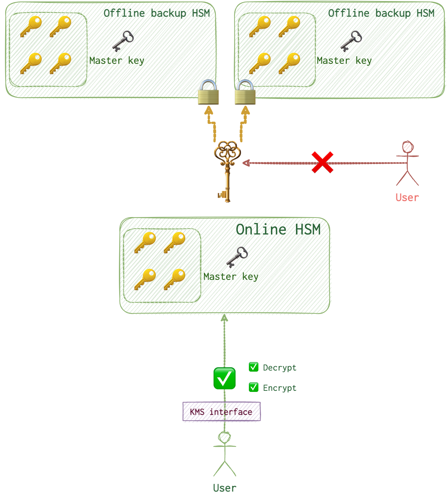

Here I am collecting some information that is needed in order to understand what to look for in the cloud and where.
Confusing Terms
IAM - Identity Access Management. This is a service for creating users, groups, roles, permissions, policies. Each individual using the AWS service needs to have a separate user in AWS associated with them. So, roughly speaking, user = person. Each user can be in 1+ groups. Theoretically, a user can be not a part of any group, but when they are, it’s easier to manage access and permissions. Policies are a list of permissions that can be assigned to a group, user, role. Can be created via JSON (raw) or GUI. Groups have the same permissions defined by purposes. Roles are assigned to services within AWS. Something similar to groups?
IDs
ARN
arn:partition:service:region:account-id:resource-id
arn:partition:service:region:account-id:resource-type/resource-id
arn:partition:service:region:account-id:resource-type:resource-id
Partition. There are just three of them: general (most likely to encounter), China 🇨🇳 and US Gov.
Service. Can be guardduty for alert from GuardDuty, or iam or sts or any other service.
Region, Account-ID and Resource-ID. Pretty self-explanatory.
Terraform
Most of the things can be and usually prefered to be configured via Terraform. It’s usually refered to as “Infrastructure as code”, which basically means that you can “code” the way your infrastructure is built and with what permissions. For example, you can either create an EC2 instance via GUI in AWS Console, or use aws CLI for that or you can do this via Terraform. The latter option allows better managements, transparancy and, of course, automation.
Following the advice of the instructor from Udemy (see reference below), I’ve used Visual Studio (which I usually use for scripting) with a HashiCorp Terraform plugin installed. To install terraform itself follow the instructions here - https://learn.hashicorp.com/tutorials/terraform/install-cli. Good tutorials are available for free on the Terraform’s website as well: https://learn.hashicorp.com/tutorials/terraform/aws-build?in=terraform/aws-get-started.
category "subcategory" "some_randomname" {
mandatory_stuff = "your value 1"
another_optional_stuff = "your value 2"
}
resource "google_storage_bucket" "assets" {
name = "sec510-assets-${var.UniqueString}"
}
provider "aws" {
region = "eu-west-2"
}
resource "aws_instance" "ec2" {
ami = "ami-12390843958"
instance_type = "t2.micro"
}
The suggested workflow would be to store tf files (terraform proprietary format) on git (for version control).
VPC
The main concern is that something provate can be poked from the outside. There are several controls in place to avoid this and following the best practicies of Defense-in-Depth policy we are better to leverage all of them properly. But the bigger the organization becomes, the harder it gets to configure everything correctly. Default VPC is very lax. Therefore, it should not be used for anything more serious than I personal blog or lab exercises and stuff like that.
For something to be publicly availble, a Internet Gateway is required.
NACL
Network Access Control list. Whever there is a match, further list trversal is ceised. Traffic restrictions are determined by both the NACL (which is overly permissive for the default VPC) and a security group (see the next subsection).
⚠️ Important note! NACL are stateless, which means that if the request was allowed to pass through, the response might not be if it was not configured. Rules are evaluated in order until a match is found (allow or deny) and the remaining rules in the list are skipped.
Security Group
For default EC2 security group (presuming no changes were made when deploying it) all ingress traffic will be blocked. When EC2 is greated via CLI, it’s less “open-minded” and allows less crap 💩 to flow through. Default security group (ingress all from the same sec group, egress allow traffic on all ports) != default EC2 security group.
⚠️ Important note! By default, security groups, do not allow any ingress and allow all egress traffic. Anything that was not specified, is denied by default. Security groups are stateful. So, if the request has passed through, the response will as well. Moreover, all rules are evaluted before decision is made. If there are some conflicting rules, then, the most permissive will get the medal 🥇.
❓ How rules are evaluated after NACL and SG specific are evaluated?
NAT
A NAT gateway is a Network Address Translation (NAT) service. You can use a NAT gateway so that instances in a private subnet can connect to services outside your VPC but external services cannot initiate a connection with those instances. Can be public (for the internet) or private (between VPCs). https://registry.terraform.io/providers/hashicorp/aws/latest/docs/resources/nat_gateway https://docs.aws.amazon.com/vpc/latest/userguide/vpc-nat-gateway.html NAT is not required for completely private network and private endpoints. All this access is managed by policies and role-based access controls.
VPC Flow Logs
If these are enabled, you will be able to tell, who connected to what resource and when. Flow Logs are not enabled by default. It’s not the same as pcap file! It doesn’t provide full packet info. Just statistics, addresses, ports, result (accept/reject).
Logs are sent then either to the CloudWatch or S3 (depending on the configuration). An IAM role needs to be created prior to that. Here are the minimum requirements for the CloudWatch role: CreateLogGroup, CreateLogStream, PutLogEvents, DescribeLogGroups, DescribeLogStreams need to beallowed for all resources. To be able to assume this role, VPC Flow Logs service needs to have its own policy where "service":"vpc-flow-logs.amazonaws.com" is set to allow AssumeRole action. See here for more details.
Log breakthrough. Looks like a simple string with a space as a delimiter. Each field has its place within the string.
VPC Traffic Mirroring
A great idea to use. Deploying an EC2 with some IDS, mirror traffic there for detection. Filter for the most relevant stuff to pass it to SIEM?
AWS VPC Endpoints
By default, even private VPCs will talk over the Intenet, raising unneccessary interest of the attackers. VPC Endpoints are used in order to establish a connection for separate VPCs without exposing themselves to the public.
https://www.linkedin.com/pulse/aws-interface-endpoint-vs-gateway-alex-chang/ https://aws.amazon.com/blogs/architecture/choosing-your-vpc-endpoint-strategy-for-amazon-s3/
Gateway
Free to use. Dynamo and S3 use this type of endpoint. Reside within the VPC globally.
Interface
Using static IP. Reside inside the subnet (which is inside the VPC). Costs something. Below example is for a S3 service.
resource "aws_vpc_endpoint" "owlmailbucket" {
vpc_id = aws_vpc.hogwarts.id # this is some AWS VPC called app. Should have been created prior to this doc
service_name = "com.amazonaws.${local.region}.owlmail" # from Terraform, looks like it's a common practice
vpc_endpoint_type = "Interface" # self-explanatory
subnet_ids = [
aws_subnet.harrypotter.id, # (Optional) The ID of one or more subnets in which to create a network interface for the endpoint.
aws_subnet.siriusblack.id # So, that means, hey, I've created an interface which subnet harrypotter and siriusblack can use
]
security_group_ids = [
aws_security_group.owlmail.id # For Interface only
]
private_dns_enabled = true # Whether or not to associate a private hosted zone with the specified VPC.
}
## INTEFRACEE ENDPOINT, require private access, restrict access to 1 VPC
## Interface policy
data "aws_iam_policy_document" "owlmailpolicy" {
statement {
actions = ["owlmail:GetEncryptedMessage"]
resources = *
effect = "Allow"
condition {
test = "StringEquals"
variable = "aws:SourceVpc" # only allow messages from a specified VPC
values = [aws_vpc.hogwarts.id] # this is the VPC mentioned above
} }
}
## SECURITY GROUP
resource "aws_security_group" "owlmailsg" {
name = "owlmail"
description = "Sec group to for Owl Main VPC endpoint"
vpc_id = aws_vpc.hogwarts.id # specify the id of a Hogwarts VPC which was created earlier
ingress {
description = "HTTPS from the subnet containing the EC2 instance"
from_port = 443
to_port = 443
protocol = "tcp"
cidr_blocks = [aws_subnet.wholeuk.cidr_block] # only allow inbound traffic over TCP:443 from the IP range that the application we want to allow is residing
}
}
However, one can create a custom endpoint. For this to work, they need to set up a NLB to accept and pass the traffic to this service and the endpoint config above would also have to specify this NLB to use. IAM permissions can be used to restrict creation of these endpoints.
In order to understand this thing more, I’ve come up with an analogy. Imagine, there is a bank you’d like to use (not HSBC, probably 😣). You can’t just use it like this. It’s like the AWS private service. You need to have something in order to use it. So, you sign an agreement, install an application and now - voila! Application that you install (or a website that you would use for your transactions) are these endpoints. One little fault in this analogy is that this communication is performed over the public Internet whereas AWS endpoint allow totally isolated traffic.
Elastic IP
Weird enough, but it means static IP.
Connection
SSH / RDP
AWS (as well as other cloud providers), allow SSH Access over the web. This way one doesn’t need to open the ports to the outside world. Browser-based SSH connections can be controlled from inside. This allows to apply strict access control through IAM and also this activity is logged.
VPN
If the organization uses a VPN in order to connect, an investigator will need the VPN logs as well (IPsec or OpenVPN).
Site-to-Site VPN
On-premise -> AWS over IPSec and virtual private GW. Tunnel is established. More here.
Client VPN
OpenVPN over TLS. Worstations and mobile phones connect to a cloud-hosted VPC. One needs to create a cert for a client and for the server and upload it to ACM. Create VPN endpoint and link to a VPC. Download OpenVPN config file.
VPN CloudHub
Multiple remote networks connect to a single private GW.
Custom
Host their own VPN on EC2 instances. For example, Pritnl.
Private Connections
Dedicated fibers that connect client data centers and AWS infrastructure. Traffic never goes to the Internet.
SSM
AWS Systems Manager. The session manager allows IAM to connect tro EC2 instances. No need to have a bastion host, or open 22 port for SSH or desktop gw. Instead a principal (entity) can call ssm:StartSession action. Captured by CloudTrail logs.
KMS
Multi-tenany Hardware Security Applicance (HSM). Keys never leave the HSM-domain, like with the Keychain, encryption and decryption happen without providing the key to the client.
RDS and EBS require disk-level encryption at rest.
 Keys can be deleted (in 7 days after the request) or deactivated. Deletion is detructive. Data won’t be restorable once the key is deleted.
CMK (Customer Master Key) - meta of the key, the key itself is inside the KMS infra. DK (Data Key) - keys for data enctyption. Encryption context - custom tags in logs which restrict key usage.
Remember the book, Eine Woche voller Samstage, where this director that was depicted as a total freak (who hid a key in a sock -> boot -> wardrobe -> drawer -> key from the drawer etc)? If you have never read this book, better do so now, it’s a true masterpiece. So, when you look at encryption mechanisms implemented in our modern digital world, this stops being so funny because it’s what it looks like now.
In this case, data is encrypted by DK (or DEK) which are stored in HSM where they are protected by CMK, which is duplicated and protected by the domain key elsewhere. Besides, you won’t see this DK as well, it’s in HSM. Theoretically, you can use a CMK to encrypt application data that is <= 4KB via aws kms encrypt but it’s just nuts. Don’t do that, it’s weird. Like eating soup with a teaspoon.
Envelope encryption is what they call all this encryption mess.
By default it’s symmetric encryption.
Policies
You can restrict key usage with either principal-based policies or resource-based policies on a key-by-key basis. The second option is recommended.
resource "aws_kms_key" "owlmailbucket" {
description = "Used for Hogwarts secret mail storage"
customer_master_key_spec = "SYMMETRIC_DEFAULT"
policy = data.aws_iam_policy_document.owlmailpolicy.json
}
resource "owlmailbucket" "s3" {
name = "${var.UniqueString}/database"
kms_key_id = aws_kms_key.owlmailbucket.key_id
}
Using a principal-based policy is not a good idea. Resource-based is better. I guess, since it’s easier to manage.
[
{
"Effect": "Allow",
"Action": ["kms:<required actions listed>"],
"Resource": "*",
"Principal": {
"AWS": "arn:aws:iam::01234567890:user/siriusadmin"
}
}, {
"Effect": "Allow",
"Action": "kms:Decrypt",
"Resource": "*",
"Principal": {
"AWS": "arn:aws:iam::012345678901:role/useroftheowlmail"
},
"Condition": {
"StringEquals": {
"kms:CallerAccount": "012345678901",
"kms:ViaService": "owlmailbucket.<Region>.amazonaws.com"
}
}
]
-
Gives the cloudsecurity IAM user permission to administrate the key. This is necessary for our Terraform deployment and teardown script to function properly. The list of actions the actual policy lists is: kms:Update*, kms:ScheduleKeyDeletion, kms:Revoke*, kms:Put*, kms:List*, kms:Get*, kms:GenerateDataKey, kms:Encrypt, kms:Enable*, kms:Disable*, kms:Describe*, kms:Delete*, kms:Decrypt, kms:Create*, and kms:CancelKeyDeletion
-
Grants the IAM role used by our EC2 instance profile the ability to decrypt data with this key, but only if the request is made via the Secrets Manager service in our AWS account.
CloudHSM
Basically, it’s provate HSM. Otherwise, CMKs of different companies are stored in one HSM place.
📘 BTFM
aws kms list-keys --profile ProfileName # if it's sso
# lists KeyId and KeyArn for each key
echo $(aws kms list-aliases --profile ProfileName) | jq
# lists AliasName, AliasArn and TargetKeyId
# get the resource-based policy associated with this key
aws kms list-key-policies --profile ProfileName --key-id $(aws kms describe-key --key-id alias/test-trail --profile ProfileName | jq -r '.KeyMetadata.KeyId')
My bash script to check for resource-based policies associated with a key (mind that it’s adjusted to SSO login instead of aws configure credentials):
for keyname in $(aws kms list-aliases --profile ProfileName | jq -r '.Aliases[].AliasName')
do
key_id=$(aws kms describe-key --key-id $keyname --profile ProfileName | jq -r '.KeyMetadata.KeyId')
echo "For key \e[92m$keyname\e[0m with id=$key_id the policies in use are:"
echo "\e[96m$(aws kms list-key-policies --key-id $key_id --profile ProfileName)\e[0m"
echo "======================="
done
If you see nothing but the following
{
"PolicyNames": [
"default"
]
}
It means that there either are no policies associated or there is some identity-based policy assigned. Let’s check with idetity policies.
for rolename in $(aws iam list-roles --profile ProfileName | jq -r '.Roles[].RoleName' )
do
echo "For role \e[92m$rolename\e[0m the policy is: "
echo "\e[96m$(aws iam list-attached-role-policies --role-name $rolename --profile ProfileName)\e[0m"
done
Then, for the policy in question (get the PolicyArn from the output above):
aws iam get-policy-version --profile ProfileName --policy-arn PolicyArn --version-id v1
And even better, which policies have kms permissions:
for rolename in $(aws iam list-roles --profile ProfileName | jq -r '.Roles[].RoleName' )
do
for policy_arn in $(aws iam list-attached-role-policies --role-name $rolename --profile ProfileName | jq -r '.AttachedPolicies[].PolicyArn')
do
policy=$(aws iam get-policy-version --profile ProfileName --policy-arn $policy_arn --version-id v1)
if echo "$policy" | grep -q "kms"; then
echo "\e[92m$rolename\e[0m has KMS permissions:"
echo "\e[96m$(aws iam get-policy-version --profile ProfileName --policy-arn $policy_arn --version-id v1 | jq)\e[0m"
fi
done
done
Retrieve CloudWatch event for each key:
loggroupname="log_group_name"
for keyname in $(aws kms list-aliases --profile ProfileName | jq -r '.Aliases[].AliasName')
do
echo "keyname is $keyname"
key_arn=$(aws kms describe-key --key-id $keyname --profile ProfileName | jq -r '.KeyMetadata.Arn')
echo "Key ARN is $key_arn"
query_id=$(aws logs --profile ProfileName start-query --log-group-name $loggroupname --start-time 1655588640 --end-time 1659109342 --query-string "FIELD eventTime, userIdentity.userName, sourceIPAddress | SORT eventTime DESC | FILTER eventName = 'Decrypt' AND resources.0.ARN = '$key_arn'" | jq -r '.queryId')
sleep 30
echo $(aws logs --profile ProfileName get-query-results --query-id $query_id)
done